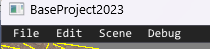

Editor移動方法
カメラ設定してわかったと思いますが、ComponentCameraがあると基本的にはそれを通して画面が出てきます
ただ全体的な画面を第三者視点で見たいときもあります。
その場合は、F4を押してみましょう。
四つ角にカメラ設定が出てきます。
この状態では、自由にデバッグカメラで動き回れます
UnrealEngineに慣れていれば、ほぼそのまま操作が可能です。
UE5 カメラ操作の参考ページ
ただし特殊な操作、AltキーやC,Zなどには対応させていません。(いずれまた対応します)
ポーズ機能
F1 でポーズがかけれます。
その状態でF2でコマ送りができます
開発時にポーズ機能は非常に大事です。これがあるのとないのとでは次のような状態でのデバッグ能力に非常に差が出てきます
GUIのON/OFF
F5 GUI表示のON/OFFができます。
当たり判定が当たっているか、座標位置やオブジェクトは正しい状態なのかなど、デバッグは常にGUIを使って行いましょう。
カーソルON/OFF
F6 でカーソル表示を消したりつけたりできます。
マウスにて、見る方向を回転したりするときに使えます。逆にGUIを使いたい場合は、ONに切り替えるとUIが使えます。
ALT-MENUについて
ゲーム中にALTキーを押すとメニューが開きますここから新たにシーンをロードやUIの設定等も行うことが可能です。
